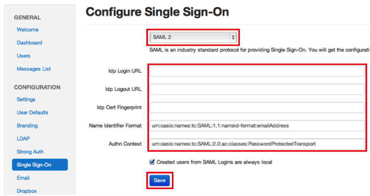

This setup might fail without parameter values that are customized for your organization. Please use the Okta Administrator Dashboard to add an application and view the values that are specific for your organization.
Note: LiquidFiles is a
community created application. Some terminology can vary among apps. For example, some apps refer to the Sign Out URL as the Identity Provider HTTP POST URL. You might have to look at the sample data provided by an app to determine which field to use.
-
Sign in to your LiquidFiles Admin account and select Admin > Single Sign-On. The screen shown below appears.

-
Copy and paste the following into the Idp Login URL field:
Sign in to the Okta Admin app to generate this variable.
-
Copy and paste the following into the Idp Logout URL field:
Sign in to the Okta Admin app to generate this variable.
-
Copy and paste the following into the Idp Cert FingerPrint field. Change all letters in the fingerprint below to upper case and insert colons after every second character. For example, if the fingerprint below were 1x2y3z, change it to 1X:2Y:3Z using a text editor, before pasting it into the form.
Sign in to the Okta Admin app to generate this variable.
- Copy and paste the following into the Name Identifier Format field:
urn:oasis:names:tc:SAML:1.1:nameid-format:emailAddress
- Copy and paste the following into the Authn Context field:
urn:oasis:names:tc:SAML:2.0:ac:classes:PasswordProtectedTransport
- Select Save.
- Done!
Note: LiquidFiles supports IdP-initiated flow, SP-initiated flow, and Just In Time (JIT) provisioning.